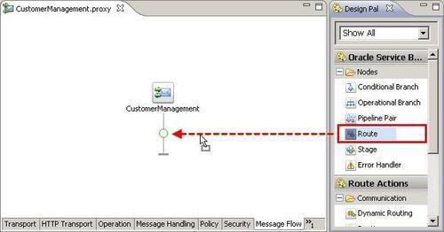
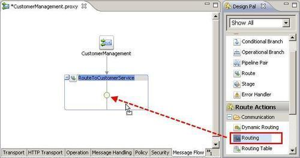
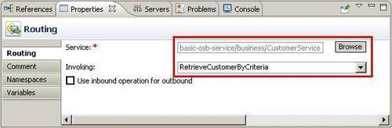

To route the message to another service (to a business service or even to another proxy service) a routing action inside a Route node needs to be used.
Make sure you have the current state of the basic-osb-service project available in Eclipse OEPE. We will start this recipe from there. If necessary, it can be imported from here: \chapter-1\getting-ready\echo-proxy-service-created.
In Eclipse OEPE, perform the following steps:


business folder).
We have created a single route to the operation RetrieveCustomerByCriteria of the external web service. But we not only have one operation on the proxy service to implement, our WSDL contains two operations, which we need to route to different operations on the external service. Therefore, just a single Routing action is not enough. We need to use an Operational Branch with a branch containing a different Routing action. Using an Operation Branch node will be shown in the next recipe.
We cannot select the Use inbound operation for outbound option, because the WSDL on the proxy service is no longer the same as the one on the business service (external service), that is, the operation names do not match.